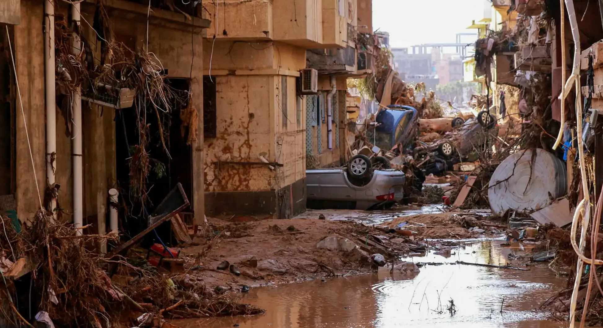
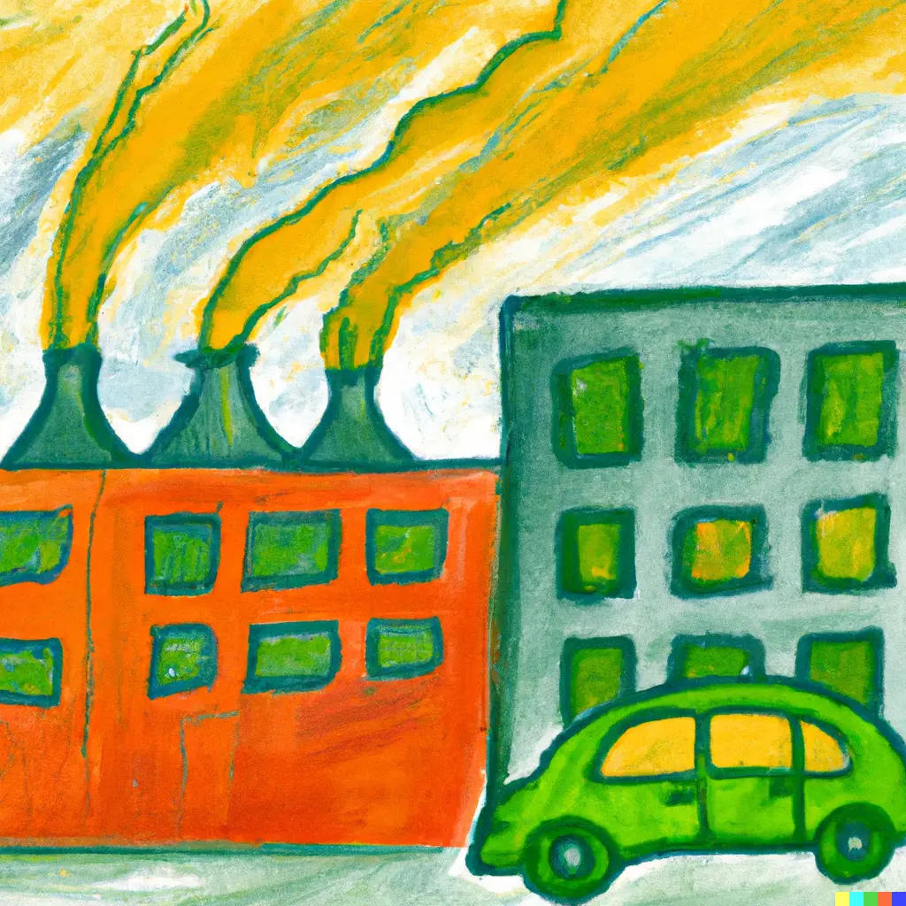
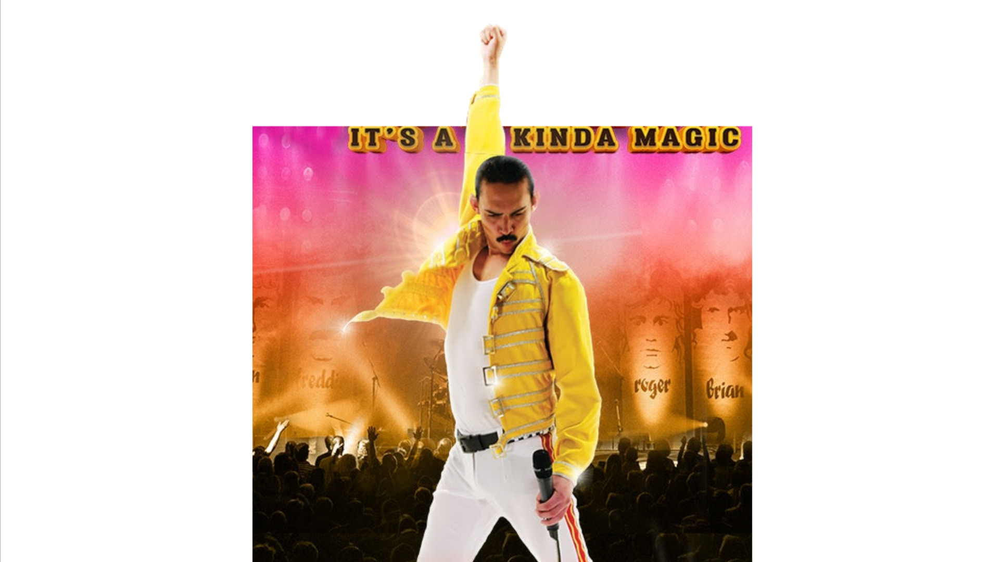
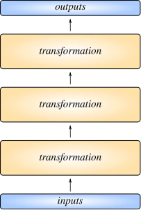
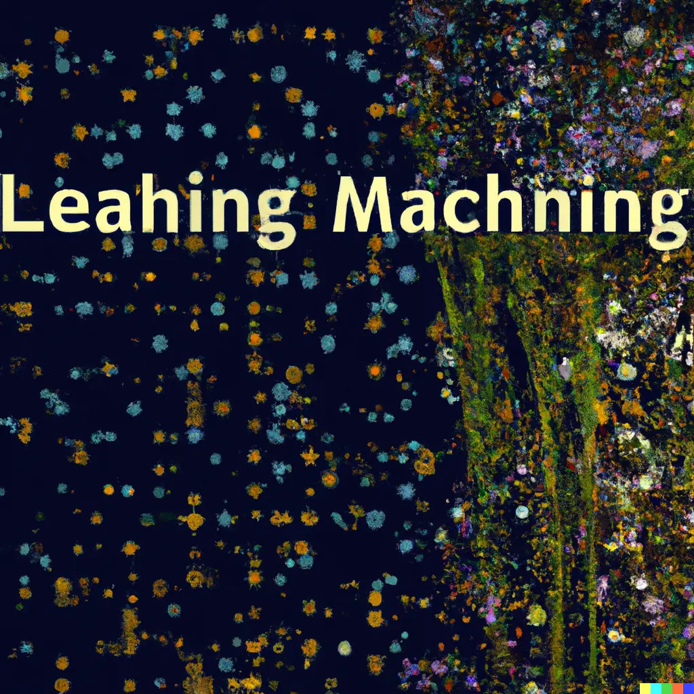
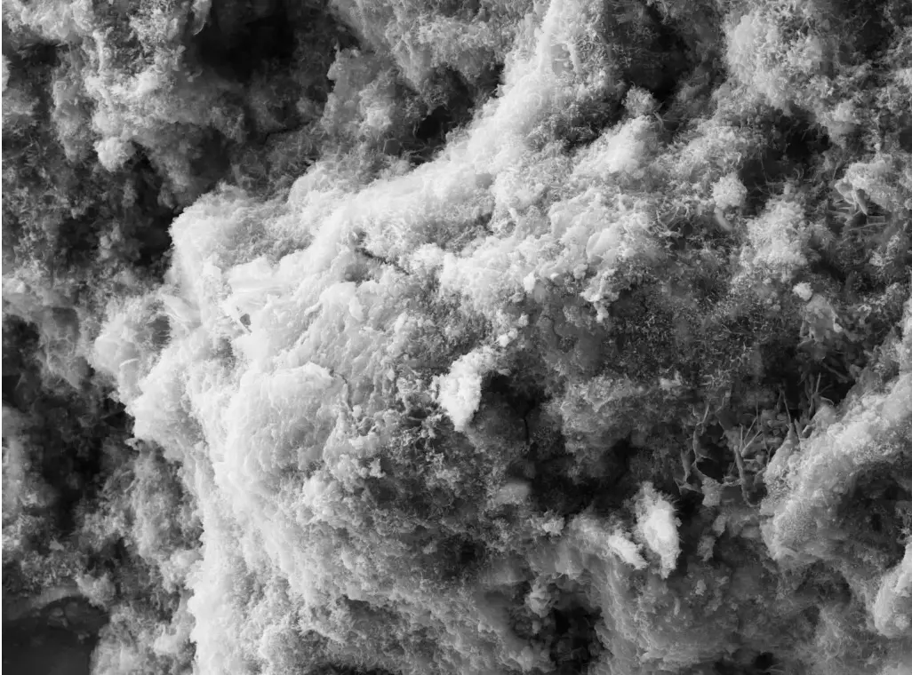
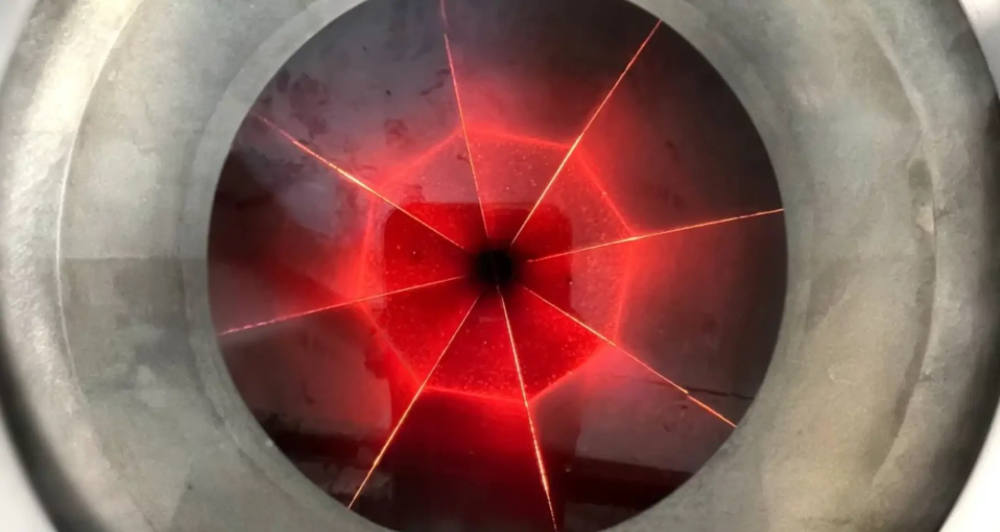
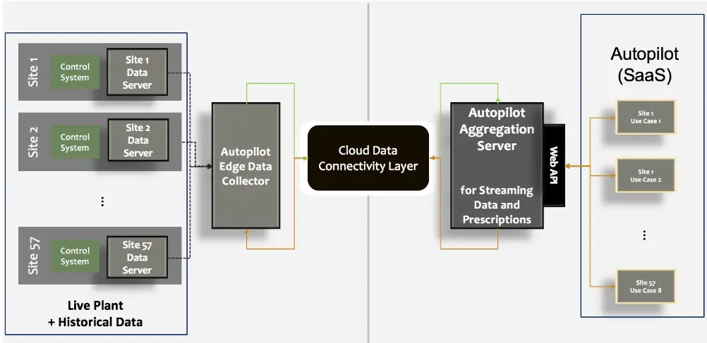
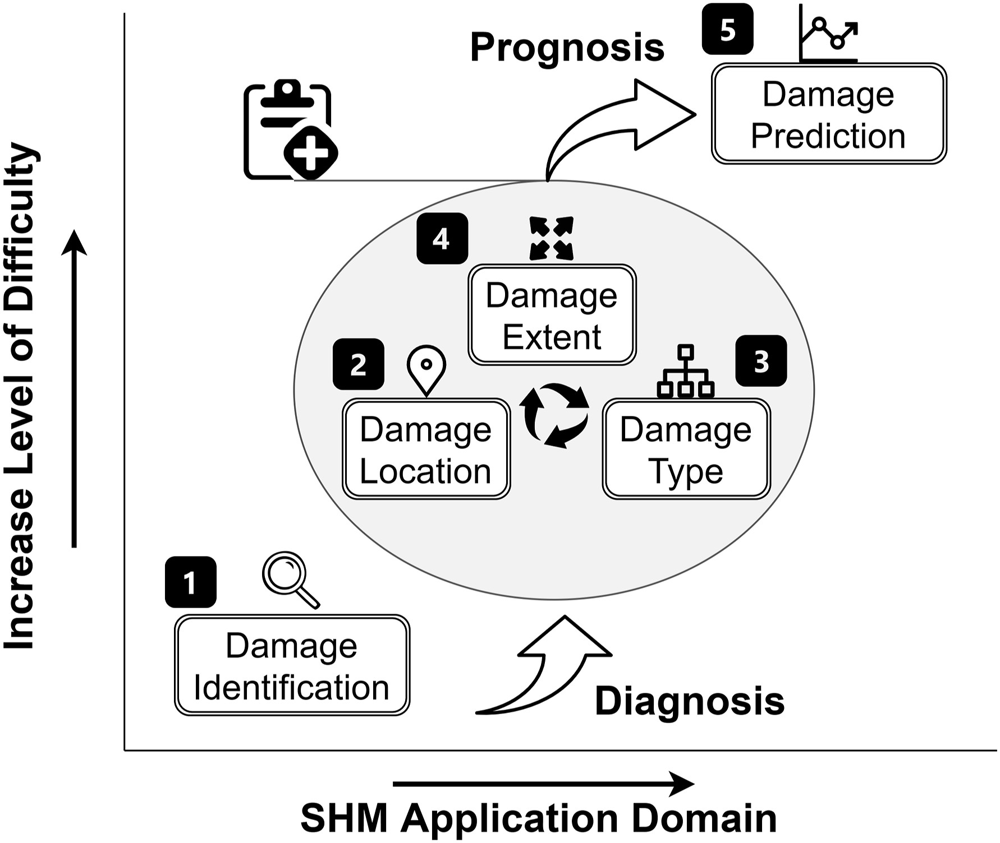
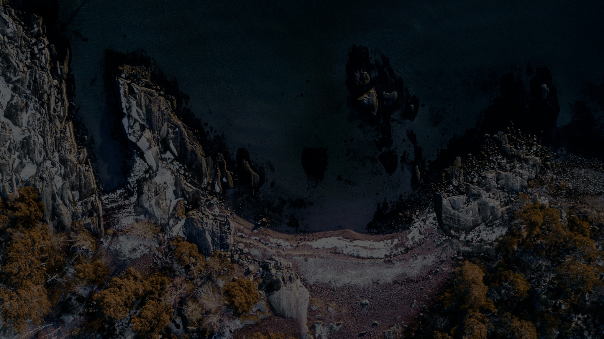

Loading.
PYMD slides requires a javascript-enabled browser.
Usage. Arrow buttons, page up/down, or space to navigate. F for fullscreen. B for blank. Click on leftmost quarter for previous slide, the rest for next.









